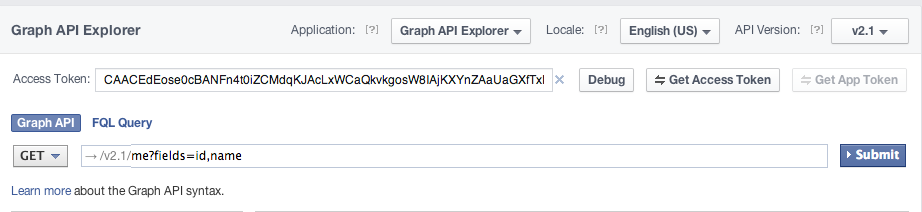

Changee Learning Path - 與 API 合作
在網路的時代，我們在開始學習新領域時，可以透過 Google 找到許多學習的「資訊」，然而過多的資訊反而無法判斷什麼才是適合自己的「資源」。現有的學習資源非常豐富，但卻散落在各處，使得「自我學習」時總是花費大量時間在搜尋適合自己的資訊。因此我們希望能夠建立 Changee Learning Path「學習路徑平台」，整合資源與資訊，透過「學習分類帽」、「學習軌跡」、「實體資源」三個主要項目，建立方便自學的「學習路徑平台」。

在網路的時代，我們在開始學習新領域時，可以透過 Google 找到許多學習的「資訊」，然而過多的資訊反而無法判斷什麼才是適合自己的「資源」。現有的學習資源非常豐富，但卻散落在各處，使得「自我學習」時總是花費大量時間在搜尋適合自己的資訊。因此我們希望能夠建立 Changee Learning Path「學習路徑平台」，整合資源與資訊，透過「學習分類帽」、「學習軌跡」、「實體資源」三個主要項目，建立方便自學的「學習路徑平台」。

獲得粉絲頁上面的資料
取得測試用 accessToken
https://graph.facebook.com/v2.1/{resource}?field='參數'&access_token='token'/{facebook-id}/photos/664637236960611/likes/{facebook-id}/picture?type=(small,normal,large)變數、運算子、物件、陣列、JSON、迴圈
6 + 4 → 109 - 5 → 44 * 3 → 1212 / 4 → 343 % 10 → 36 > 4 → true9 < 5 → false8 >= -2 → true3 == 4 → false12 != 4 → truevar learningPath = 3;var no space; // 空格var 3blindmice; // 數字開頭var scored_is_fine; // 用底線分隔字var $_$; // 無意義的字var mortalKombat2; // 使用數字當序號var goodNameBro; // 開頭小寫，後面開頭大寫（馱峰命名）var item = new Object();var item = {};var mark = {
career: 'Front-End Developer',
age: 27
};mark.age → 27
mark['career'] → 'Front-End Developer'var items = new Array();var items = [];var items = [];
items.push('MacBook Air');
items.push('iPhone5s');
console.log(items); → ['MacBook Air','iPhone5s']items[0] → 'MacBook Air'網路溝通的規格
{
"id": "267610173329988",
"about": "展演空間/講座與聚會場地/共同工作空間Co-Working Space/台北市南京西路18巷8-2號(So thats me 服飾的3樓/4樓)/02-2555-5803/ http://www.changeeinfo.com",
"can_post": true,
"category": "Landmark",
"category_list": [
{
"id": "199732070036794",
"name": "Artistic Services"
},
{
"id": "211155112228091",
"name": "Event Venue"
},
{
"id": "209889829023118",
"name": "Landmark"
}
],
"checkins": 6595,
"company_overview": "Changee is aiming to be the public platform for emerging artist/creator, providing an open space to meet the public. We provide rent free, friendly exhibition, workshop or gathering space. We hope for creator to use their very limited budget on the right place at the same time having an alternative publicity. We tried to make a creator friendly environment, to share those fruitful creativities and energies of Taiwanese creator to influence more people.\nOther than creator, we found in TW, there are more and more people who dedicate and realise things with self-motivation, however, when it comes to physical space, costly rent and/or promotion fee is often the risk for the beginning. We have a very flexible physical space that hope to provide to someone who like to do something different, with a low risk, start here!\n\n\n",
"cover": {
"cover_id": "461301757294161",
"offset_x": 0,
"offset_y": 0,
"source": "https://scontent-a.xx.fbcdn.net/hphotos-prn2/t1.0-9/s720x720/1013686_461301757294161_1054157237_n.jpg"
},
"has_added_app": false,
"hours": {
"mon_1_open": "10:00",
"mon_1_close": "22:00",
"tue_1_open": "10:00",
"tue_1_close": "22:00",
"wed_1_open": "10:00",
"wed_1_close": "22:00",
"thu_1_open": "10:00",
"thu_1_close": "22:00",
"fri_1_open": "10:00",
"fri_1_close": "22:00",
"sat_1_open": "10:00",
"sat_1_close": "22:00",
"sun_1_open": "10:00",
"sun_1_close": "22:00"
},
"is_community_page": false,
"is_published": true,
"likes": 18209,
"link": "https://www.facebook.com/changeeinfo",
"location": {
"city": "Taipei",
"country": "Taiwan",
"latitude": 25.03019978789,
"longitude": 121.52747609054,
"street": "臺北市南京西路18巷8之2號3樓(中山) / 臺北市八德路三段106巷55號(延吉)",
"zip": "103"
},
"mission": "基本資料：\n\nChangee – 實體創意平台與工作空間\n官網：http://www.changeeinfo.com\n粉絲團：http://www.facebook.com/changeeinfo\n信箱：service@changeeinfo.com\n\n1. \u2028Changee中山創業基地：\n\u2028平日晚間、週六週日：講座、表演、會議活動\u2028\n週一至週五：共同工作空間\u2028\n地址：台北市南京西路18巷8-2號3樓/4樓\n\n2. \u2028\u2028Changee延吉小屋：\n\u2028內容：展覽、咖啡餐飲、工作坊場地\u2028\n營業時間：12-8pm 週一公休\u2028\n地址：臺北市松山區八德路三段106巷55號 \n\n3. \u2028\u2028Changee六張犁共同工作空間：\u2028\n24hr Co-working Space\u2028\n地址：臺北市大安區嘉興街363巷15號2樓\u2028\u2028\n\n4. Changee芝山噪音咖啡廳與活動空間：\u2028\n週一至週日9am-10pm：講座、表演、會議活動、工作坊場地\u2028\n週二至週五12am-6pm：展覽空間、咖啡餐飲\u2028\n地址：台北市士林區福華路180號1樓\n\n5. \u2028\u2028Changee Playground：\n\u2028100坪講座、表演、會議活動空間\n地址：台北市羅斯福路五段176巷2號\n\n*******************************************************\n\n\nChangee – Change Things with Eagerness \n\nChangee相信著「行動」與「實踐」，認為每個人都有實踐自己想法的力量。所有的想法都可以想到一個簡單、容易執行的方式開始嘗試、實行。而我們努力和嘗試構築的則是一個友善實踐者的環境，期待成為新銳創作者的發表與串聯平台，讓更多的有趣事物與創作能量可以被看見。\n除了提供共同創意工作室(Co-working Space)外，也主辦各式講座、工作坊與展演；並以最友善的方案提供兼具品質與功能的活動場地，可籌辦中大型活動，讓實踐者有呈現的機會。同時我們致力於媒介通道的建置，讓更多人注意到在台灣許多角落萌芽的創意與熱情。\n\n\n*******************************************************\n\nChangee由「空間」、「社群」、「資訊」三個核心出發，希望能夠創造一個友善實踐者的平台。以下為Changee正在進行的幾項計畫以及所需要的實習或志工夥伴：\n\n1. 空間\nChangee目前在台北市有五個實體空間。\n經營項目為：共同工作空間、活動展演空間、展覽與生活空間。\n空間部分的經營特色為透過與閒置空間屋主合作，將閒置空間轉化為實質的友善資源，提供給初期之創業者或藝術文化創作者及團隊使用。 將實踐者可能需求實體空間的三種運用形式做改良，讓更多可能性在實體空間發生。 \n\nChangee 空間粉絲團：http://www.facebook.com/changeeinfo\nChangee 空間官網：http://www.changeinfo.com/\n\n------\n\n2. 社群\n\n正在開發的Changee Across社群網站是「以信任為基礎的人才與資源媒合平台」。\n以「個人」與「專案」為核心進行媒合，致力於進行「微型專案的整合與記錄」與 「建立個人公開資訊」。透過網路服務與機制,降低「資訊」不對稱、以及「時間」、「空間」所帶來的限制。逐一解決總總人們在尋找合作單位或是內部夥伴時所面臨到的問題。期待能將人與人之間的聯繫變得更簡單與直接，使兩個可合作並一起成長的微型單位相遇。\n\nChangee Across概念簡報：https://dl.dropboxusercontent.com/u/14487466/Changee%20Across.pdf)\nChangee Across 官網：http://www.changeeacross.com/\nChangee Across 粉絲團：http://www.facebook.com/changeeacross\n\n------\n\n3. 資訊：\nChangee Learning Path著重「資訊」整理。現有的學習資源非常豐富，但卻散落在各處，使得「自我學習」時總是花費大量時間在搜尋適合自己的資訊。因此我們希望透過「學習分類帽」、「學習軌跡」、「實體資源」三個主要項目，建立方便自學的「學習路徑平台」，希望透過系統化的整理，讓使用者更容易的找到所需的資訊與資源。\n\n實習夥伴：\n* 網站企劃：對於網站模式發想、資訊整合有興趣，或對教育有熱情的朋友(擅長或樂於推廣程式學習的朋友為佳)\n\nChangee Learning Path 概念介紹：http://learning-path.info/\nChangee Learning Path 社團：https://www.facebook.com/groups/changee.learningpath/\n\n\n一步一步，我們將「提供實踐者更友善的環境」逐步落實，希望能夠透過這些已累積的能量，延伸出更完整的實體與數位服務。如果你與我們有一樣的理念，或是想做的事情可以結合，歡迎聯繫我們！\n\n\n",
"name": "Changee",
"parking": {
"lot": 0,
"street": 0,
"valet": 0
},
"phone": "02-25555803 (中山) / 02-25778248 (延吉)",
"products": "展演空間/講座與聚會場地/共同工作空間 Co-Working Space/發表與呈現舞台/",
"public_transit": "中山捷運站一號出口步行1分鐘(So thats me 服飾的3樓/4樓)\n",
"talking_about_count": 325,
"username": "changeeinfo",
"website": "http://www.changeeinfo.com/",
"were_here_count": 0
}看起來就跟物件一樣
鍵值對 Key-Value Pair
while( *成立條件* ) {
*執行程式*
}for ( *開始值* ; *迴圈成立條件* ; *迴圈結束做的事* ) {
*執行程式*
}var token = 'CAACEdEose0cBAKIRhJ8OAdgv4fJsZCRpiNODnMTCBxxmc828KTlbnbiU6Yvzww4sIj08oXWeWyzgzwHfebjtO4umMX7g87nYGJjC881qY0SvZCHiEeRtT3exXWIYGtfRIRt4fWeVctAS3pJKGOuGWOm33lZCnGZALmHRgnLA7TEOsql3ZBZB4xPgUslou0vvnF6MwTw2dWk3XoiPFZAZCUyVRNxuEiOCzecZD';
$.ajax({
url: 'https://graph.facebook.com/v2.1/changeeinfo/feed?access_token=' + token,
type: 'get',
dataType: 'jsonp',
success: function(response) { // callback 回呼
console.log(response);
}
});changeeinfo/feed?fields=message&limit=10運用前次的 paging.next 資訊
JS Binvar ref = new Firebase("https://{YOUR-FIREBASE}.firebaseio.com");
var authClient = new FirebaseSimpleLogin(ref, function(error, user) {
if (error !== null) {
// 使用者拒絕授權
console.log("Error authenticating:", error);
} else if (user !== null) {
// 使用者成功登入
console.log("User is logged in:", user);
} else {
// 使用者登出
console.log("User is logged out");
}
});auth.login("facebook", {
scope: "public_profile, user_friends" // facebook Permission.
});auth.logout();Google 搜尋關鍵字：query google spreadsheet